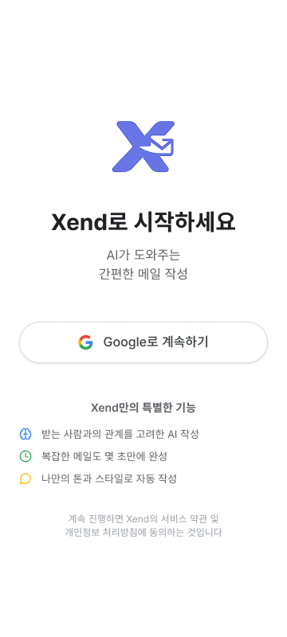
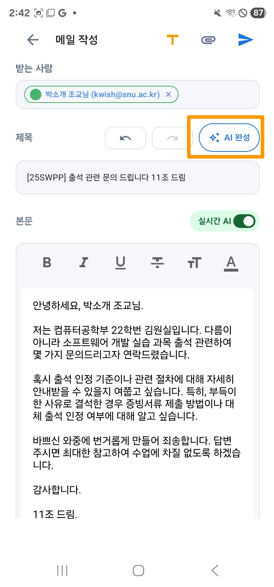
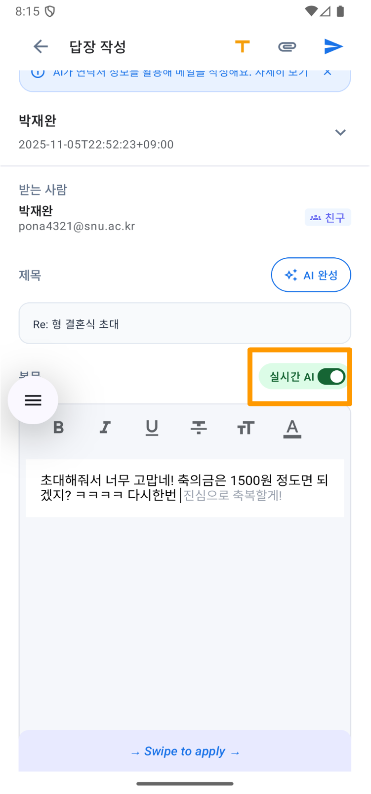
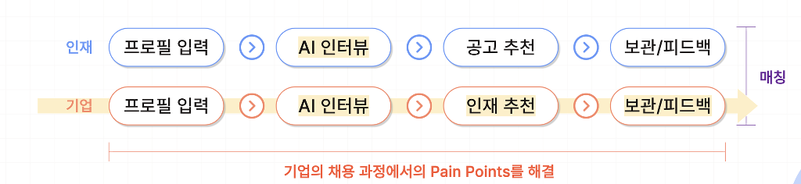
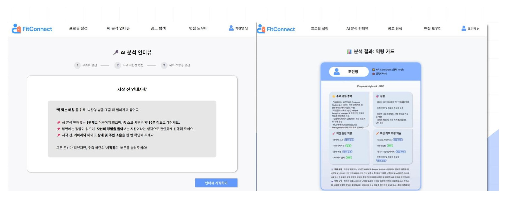
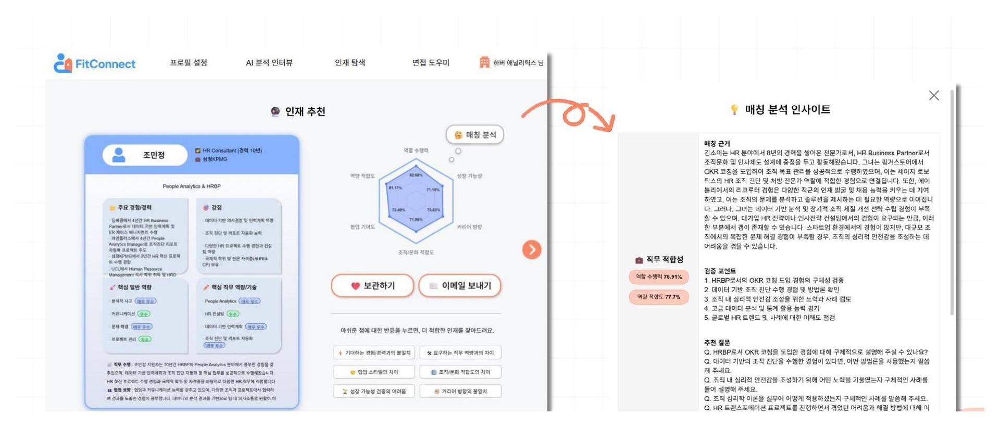
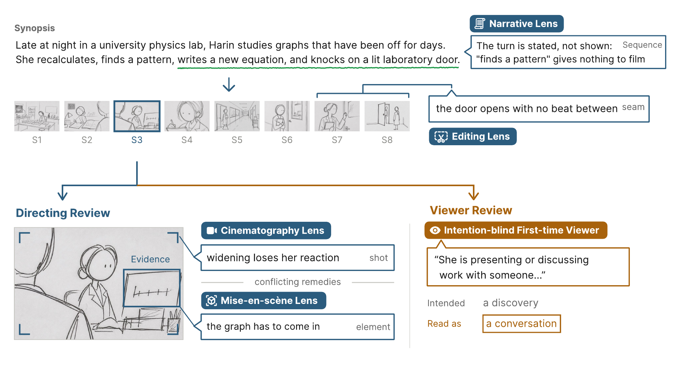
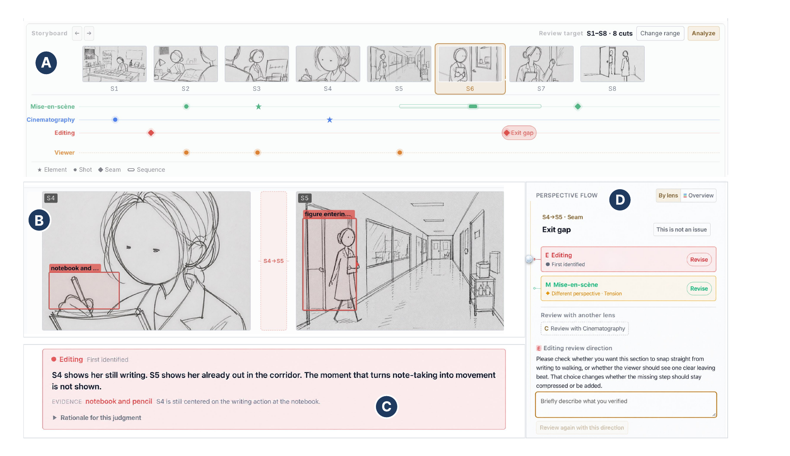

01 / MEDIA
제작 현장 이해
시사교양·예능·영화 4편과 EBS 제작 현장에서 기획, 촬영, 섭외, 편집을 경험했습니다.
AI MEDIA PRODUCT PLANNER
영상 제작 현장의 언어와 AI 제품 개발의 언어를 모두 이해하며,
제작자의 의도와 시청자의 경험을 연결하는 제품을 기획합니다.
영상 콘텐츠를 직접 만들어 보았고,
사용자의 문제를 AI 서비스로 기획했으며,
개발자와 함께 실제로 작동하는 서비스를 구현했습니다.
01 / MEDIA
시사교양·예능·영화 4편과 EBS 제작 현장에서 기획, 촬영, 섭외, 편집을 경험했습니다.
02 / PRODUCT
사용자 조사로 문제를 정의하고, AI 기능의 우선순위를 설계해 개선 방향을 구체화했습니다.
03 / BUILD
기획과 UI에 머무르지 않고 Android와 AI 백엔드 구현까지 참여해 제품의 제약을 이해했습니다.
VIDEO PRODUCTION
2년 동안 시사교양·예능·영화 4편을 제작하고, EBS 제작 현장에서 아이템 기획부터 촬영·편집까지 경험했습니다.
01 · 응답하라 2020 - 코로na때는 말이야
2045년에 발견된 2020년은 어떤 모습일까?
뉴스, 비대면 브이로그, 미래의 AI 화자를 교차해 코로나 시대의 일상과 그 이면의 혐오 문제를 담은 페이크 다큐멘터리를 기획했습니다.
02 · 언택팅 - 비대면으로 대면하기
직접 만나지 않고도 타인과 연결될 수 있을까?
서로 다른 사람들이 온라인에서 관계를 쌓는 과정을 전면 비대면으로 촬영했습니다. 출연진 섭외와 인터뷰를 맡으며, 좋은 장면 이전에 신뢰가 설계되어야 한다는 것을 배웠습니다.
03 · 귀하신 몸 - 불안장애편
한 편의 콘텐츠는 조직 안에서 어떻게 완성되는가?
매주 방송 아이템을 조사하고 출연자와 장소를 섭외했으며, 현장 운영과 후반 작업을 지원했습니다. 본 방송과 다른 시청 환경을 고려해 유튜브용 영상을 직접 제작했습니다.
방송 본편 보기AI PRODUCT PLANNING
01 · RELATIONSHIP-AWARE AI EMAIL WRITING APP
수신자와의 관계에 맞는 말투를 반영하고,
사용자 고유의 문체로 메일을 완성합니다.
생성형 AI로 정중한 메일 초안을 쉽게 만들 수 있지만, 메일은 내용만으로 완성되지 않습니다. 수신자와의 관계, 이어진 대화의 맥락, 사용자의 말투가 함께 반영되어야 합니다. 기존 도구는 이 맥락을 놓쳐 기계적인 답장을 만들곤 했습니다.

01 · 관계 맥락 관리
수신자별 관계와 그룹을 저장해 메일 작성 시 자동으로 반영합니다.
02 · 맥락 반영 메일 작성

저장된 관계와 사용자의 문체를 바탕으로, 상황에 맞는 초안을 완성합니다.
03 · 실시간 AI 제안

또는 작성 중 단어·문장 단위의 제안을 받아, AI에 의존하지 않고 메일을 다듬습니다.
02 · AI RECRUITMENT MATCHING PLATFORM
서류에 없는 역량과 조직의 인재상을 인터뷰로 구조화해, 인재와 기업을 매칭해줍니다.
기업은 서류만으로 지원자의 실제 역량을 검증하기 어렵고, 필요한 인재상도 구체화하지 못합니다. FitConnect는 인재와 기업에 대한 AI 인터뷰· 분석 결과를 바탕으로 '딱 맞는 매칭'을 제공하는 채용 플랫폼입니다.
서비스 흐름

구조화·직무적합성·문화적합성 3종 면접으로 인재와 기업 양쪽을 심층 분석합니다.
Generator–Validator 구조가 모호하거나 경력과 연결되지 않는 질문을 걸러 재생성합니다.
인재와 공고를 여섯 개 적합도 축으로 임베딩하고, 코사인 유사도로 추천합니다.


지원자는 역량과 경험을, 기업은 포지션 요구와 문화 기준을 답합니다.
답변과 프로필을 반영해 다음 질문을 만들고, Validator가 질문의 적합성을 점검합니다.
여섯 축의 적합도와 함께 매칭 근거·검증 포인트·후속 질문을 제시합니다.
AI × MEDIA · CHI 2027 SUBMISSION
영상 제작 경험과 AI 제품 설계 경험을 결합해 연구했습니다.
CREATOR TOOL, AUDIENCE PERSPECTIVE
생성형 AI는 한 번에 이야기, 인물 배치, 카메라 앵글, 컷 전환까지 여러 연출 결정을 동시에 만들어냅니다. 연출자는 결과가 뭔가 어색하다는 건 느껴도, 정확히 무엇이 문제이고 무엇을 고쳐야 하는지는 판단하기 어렵습니다.
SceneLens는 내러티브·미장센·촬영·편집, 네 가지 관점을 가진 AI 에이전트가 각자 스토리보드를 검토해 어디서 문제가 생기는지 짚어줍니다. 여기에 연출 의도를 전혀 모르는 별도의 '관객 에이전트'가 같은 스토리보드를 읽어, 실제로 어떻게 전달되는지도 함께 비교해 보여줍니다.

DIRECTING REVIEW, IN DETAIL
연출자가 스토리보드 전체 또는 원하는 구간을 고르면, 네 관점(내러티브·미장센·촬영·편집)이 그 범위를 검토해 후보 문제를 찾아냅니다. 각 문제는 컷 하나, 컷과 컷 사이, 또는 전체 흐름 중 어디에 해당하는지와 함께, 어느 장면·어느 영역을 보고 그렇게 판단했는지 근거까지 제시합니다. 연출자는 이 판단을 그대로 받아들이거나, 근거가 부족하다고 보면 기각할 수 있습니다.
